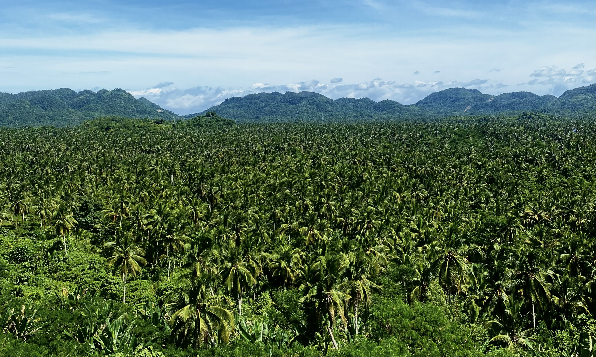

Since 2021, the Philippines has been a recurring topic in our conversations with Marts.
What started as casual talks gradually turned into a shared dream to one day explore the islands together and experience the vibrant beauty of the country firsthand.
Then, on a random night in January 2023, after years of daydreaming and imagining what it would be like, we finally made the decision that changed everything: we bought the plane tickets.
A one-month journey to my beautiful homeland was no longer just a fantasy... it was happening.
With excitement came responsibility.
We now had to plan the entire trip.
There were countless islands we wanted to explore, each with its own unique charm.
But with only a month, we knew we had to make tough choices.
Time wasn't on our side, and neither was the weather.
The Philippines' rainy season stretches from June to November, and our trip would fall right in the middle of it.
That meant the possibility of unpredictable storms and, worse, typhoons... a real concern for any traveler, but especially for us on our first big adventure together.
So we took our time.
We researched carefully, weighed every option, and made deliberate choices.
Every destination, every route, and every plan was made with caution and care, all in the hopes of making the most of this once-in-a-lifetime experience.
This webpage is created with a desire of sharing our journey and our joy of travelling. Enjoy !
